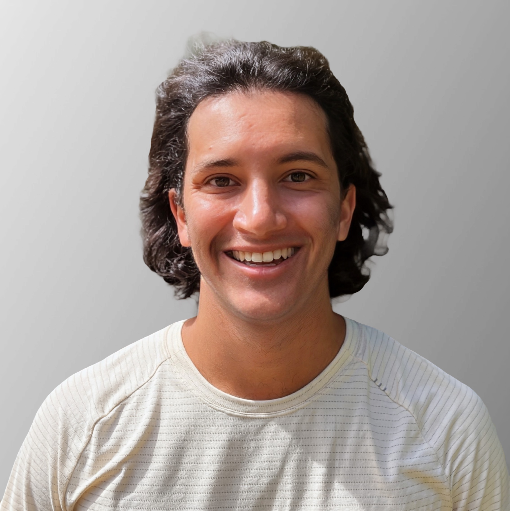

Alejandro Gutierrez
BSN, MPH, BS
New Graduate Nurse | Systems Thinker | Evidence-Based Advocate | Bilingual
BLS
ACLS
NIHSS
Medical Spanish
Data Analytics
🏆 Ruth G. Franc Kindness Award
🎓 Cum Laude
⭐ Sigma Theta Tau International
600+
Clinical Hours
At Magnet Hospitals
192
Preceptorship Hours
Peds ED + Adult Med-Surg
100+
Providers Trained
SDOH & EHR Implementation
3
Graduate Degrees
BSN • MPH • BS
Academic Foundation
Three degrees building comprehensive healthcare expertise: clinical practice, public health systems, and pre-medical sciences
BSN
Bachelor of Science in Nursing
Goldfarb School of Nursing at Barnes-Jewish College
January – December 2025
Cum Laude
Ruth G. Franc Kindness Award
Sigma Theta Tau International
MPH
Master of Public Health
Saint Louis University
Behavioral Science & Health Equity
2016 – 2018
SDOH Implementation
Data Analytics
BS
Bachelor of Science
Saint Louis University
Public Health, Pre-Medical Track
2013 – 2017
Health Systems
Epidemiology
What Makes Me Different
Beyond clinical skills—I bring systems understanding, evidence-based advocacy, and proven implementation expertise
🎯
Systems Thinker
Led SDOH EHR integration affecting thousands of patients. I don't just see individual cases—I see patterns, upstream factors, and system failures. My MPH taught me why disparities exist; my nursing training showed me how to fix them at the bedside and beyond.
📊
Evidence- & Social Justice-Based Advocate
Advocated for Black adolescent with delayed sickle cell pain management using data to force prompt resolution: pain scores, vitals, evidence-based protocols. I use evidence and determination to drive health equity—not hope, not asking nicely.
🌍
Cultural Bridge Builder
First-gen American (Colombian/Spanish/Indian/Kenyan). Fluent Spanish-English. I don't just translate—I understand what it means when systems aren't designed for you. I watched my immigrant parents navigate stacked barriers. That lived experience shapes every patient interaction.
💡
Implementation Expert
Created emergency shelter wellness screening tool. Trained 100+ providers on EHR SDOH implementation. I design evidence-based interventions that actually work in real-world conditions—not ivory tower solutions that collapse on contact with reality.
❤️
Genuinely Kind
Faculty-selected for Ruth G. Franc Kindness Award. Recommenders independently noted "authentic care" and "genuine warmth." But here's the truth: Kindness isn't softness—it's seeing people when systems make them invisible. That's foundational to excellent nursing.
🚀
Relentlessly Coachable
"Receptive to feedback," "responds thoughtfully," "uncommon poise." I grew from reserved to confident clinician in 12 months. When my preceptor said "move faster," I implemented strategies immediately. Growth isn't comfortable—but it's non-negotiable.
Clinical Excellence
600 hours at Magnet-designated hospitals across diverse, high-acuity settings
🚨 Pediatric Emergency
96 hours | St. Louis Children's Hospital (Magnet)
Sickle cell crises, severe asthma, burns, behavioral health emergencies, trauma. Atraumatic IV therapy, family-centered discharge planning.
🏥 Adult Med-Surg Preceptorship
96 hours | Barnes-Jewish Hospital (Magnet)
4-6 complex patients per shift. Chronic disease, telemetry, post-op recovery, end-of-life care. Wound care, NG/PEG tubes, PICC lines.
🏥 Adult Med-Surg Rotation
216 hours | Barnes-Jewish Hospital (Magnet)
Extended rotation managing medically complex patients with multiple comorbidities. Advanced wound care, medication management across all routes.
🧠 Psychiatric Nursing
48 hours | Barnes-Jewish Hospital (Magnet)
Therapeutic communication, de-escalation techniques, trauma-informed care, mental health crisis intervention.
👶 Obstetrics
48 hours | Barnes-Jewish Hospital (Magnet)
Labor support, postpartum care, newborn assessment, family-centered maternal-child health education.
🩺 Pediatric Endocrinology
48 hours | Barnes-Jewish Hospital (Magnet)
Diabetes management education, insulin administration teaching, chronic disease coordination for pediatric populations.
🏠 Community Health
48 hours | Gateway 180 Emergency Shelter
SDOH-focused care for families experiencing homelessness. Developed evidence-based wellness screening tool to improve resource allocation.
👁️ Clinical Shadowing
Non-curricular | 2025 & 2011-2015
Adult ICU, Neuro ICU, PCU, NICU, PICU, Pediatric PACU at Barnes-Jewish & St. Louis Children's Hospitals (2025). Early exposure: Emergency Department & Pediatric Neurology ICU at MetroWest Medical Center & Boston Children's Hospital (2011-2015).
My Path to Nursing
From shadowing physicians to systems implementation to bedside care
2011-2015
The Beginning
Shadowed ER physicians and nurses at Boston Children's. They said: "Understand why people get sick before learning how to treat them."
2013-2017
BS: Public Health & Pre-Medical
Saint Louis University. Asked bigger questions: Why such poor health outcomes despite massive spending? Systems-level thinking begins.
2016-2018
MPH: Health Equity
Behavioral Science focus. Learned housing, food access, racism drive health outcomes more than medications. Implementation science expertise.
2019-2022
Product Manager: SDOH Implementation
Activate Care. Led EHR integrations, trained 100+ providers, used data analytics. But felt disconnected from patients.
2024
Return to Bedside
My wife (ICU RN at El Camino 5+ years) convinced me: "Real change happens at the bedside." Completed prerequisites.
2025
BSN: Clinical Excellence
Intensive ABSN at Goldfarb (BJC system). 600 hours. Cum Laude. Ruth G. Franc Kindness Award. Sigma Theta Tau. Ready for residency.
What Clinical Faculty Say
Independent validation from two experienced nursing educators
Sarah Decker, APRN, FNP-C, RN, CNEcl
Clinical Faculty, Goldfarb School of Nursing
Faculty Chair, Center for Interprofessional Practice and Education at Washington University Medical Campus
Dr. MaryAnn Niemeyer, PhD, MSN, RN
Assistant Professor of Nursing
Goldfarb School of Nursing at Barnes-Jewish College
"
He has the ability to think in systems while still delivering excellent bedside care. He naturally connected clinical findings to broader processes—discharge education, patient behavior change, and chronic disease management. This systems-orientation, paired with emerging clinical judgment, allowed him to anticipate needs and contribute meaningfully.
— Sarah Decker
"
Alejandro brings a unique and valuable combination of clinical excellence, public health expertise, leadership, and cultural humility. His systems-level thinking is rarely seen at the undergraduate level. He will be an outstanding new graduate nurse who will positively impact patients, families, and healthcare systems alike.
— Dr. MaryAnn Niemeyer
"
He distinguished himself as a residency-ready novice nurse with maturity, purpose, and a remarkable capacity to grow. He progressed from a reserved new student to a confident, compassionate clinician who excelled in therapeutic communication.
— Sarah Decker
"
His ability to integrate evidence-based rationale into hands-on skills while maintaining patient-centered communication set him apart from his peers. He not only excelled individually, but also served as a peer resource, frequently supporting classmates with skill refinement and clinical reasoning, reflecting both leadership and collegiality.
— Dr. MaryAnn Niemeyer
"
He remained calm under pressure, demonstrating a level of poise uncommon in early clinical learners. His presence communicates authentic care, the kind that our patients deserve and that cannot be taught from textbooks. He embodies the qualities of a nurse who will strengthen teamwork, elevate patient experience, and contribute to organizational goals.
— Sarah Decker
"
His work at Gateway 180 emergency shelter demonstrated an extraordinary level of initiative, creativity, and compassion. He envisioned and led development of an Evidence-Based Emergency Shelter Resident Wellness Screening tool designed to improve health outcomes for a highly vulnerable population—an impressive demonstration of systems-level thinking rarely seen at the undergraduate level.
— Dr. MaryAnn Niemeyer
"
His eagerness to learn was evident in the way he consistently volunteered to complete nursing interventions and proactively engaged in interprofessional communication, seeking to understand not just the 'how,' but the 'why' behind each decision. One floor nurse remarked on his reliability, respectful communication, and genuine willingness to collaborate—and said she would be happy to have him as a coworker.
— Sarah Decker
"
He demonstrated exceptional receptiveness to feedback, thoroughly reviewing comments on clinical write-ups and responding thoughtfully. His willingness to reflect on and apply guidance contributed greatly to his ongoing growth, clinical reasoning, and professional development. This is a clinician who actively seeks to improve.
— Sarah Decker